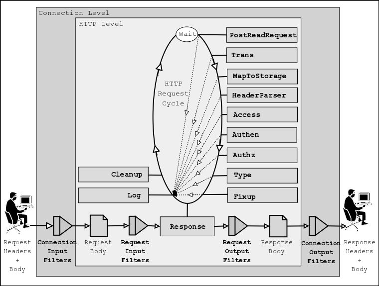

Category: mod_perl Keywords: modperl http PerlHandler
上面这张图就是 modperl 的服务器循环。本文大致是 http://perl.apache.org/docs/2.0/user/handlers/http.html 的翻译或阅读随记。modperl 可以控制所有的 Apache http 的阶段，每一个阶段都对应一个句柄，就是我以前提过的 Perl*Handler:- PerlPostReadRequestHandler (PerlInitHandler)
- PerlTransHandler
- PerlMapToStorageHandler
- PerlHeaderParserHandler (PerlInitHandler)
- PerlAccessHandler
- PerlAuthenHandler
- PerlAuthzHandler
- PerlTypeHandler
- PerlFixupHandler
- PerlResponseHandler
- PerlLogHandler
- PerlCleanupHandler
package MyApache2::MyHandlerName;其中 $r 还是 Apache2::RequestRec 的一个实例。如果你需要获得类的名字，则需要这么写：
# load modules that are going to be used
use ...;
# compile (or import) constants
use Apache2::Const -compile => qw(OK);
sub handler {
my $r = shift;
# handler code comes here
return Apache2::Const::OK; # or another status constant
}
1;
sub handler : method {
my($class, $r) = @_;这种写法与 modperl 1.x 中的 sub handler($$) { 大致上是一致的。PerlResponseHandler 是由以前的 PerlHandler 更名而来的，而且它现在包括了 Filters.Handler Type
在介绍每个阶段都是干什么的之前，我想先要弄清楚每个阶段的一些行为，或者称之为类型。按我的暂时的理解，这种类型的意义在于处理一个阶段的多个句柄（为避免混淆，一般称它们为 hook）时，比如
Perl*Handler Apache::One Apache::Two Apache::Three这里阶段是 *, 句柄是 Perl*Handler, 而 Apache::One Apache::Two 等则称为 hooks.
- 我们总共有三个类型
- VOID: 这种类型的句柄，不管 Apache::One Apache::Two 等返回什么，都按顺序执行下去
- RUN_FIRST: 当遇到第一个 hook 不是返回 Apache2::Const::DECLINED 时停止。比如 Apache::One 返回 Apache2::Const::DECLINED, 就继续执行 Apache::Two, 直到某个 hook 不返回 Apache2::Const::DECLINED. 比如 Apache::Two 返回 Apache2::Const::OK 时就结束这个阶段跳转到下一个阶段，而不是继续执行 Apache::Three
- RUN_ALL: 直到返回值不是 Apache2::Const::OK 或 Apache2::Const::DECLINED 时才结束这个阶段，否则按顺序执行多个 hooks.
Directive Type
--------------------------------------
PerlOpenLogsHandler RUN_ALL
PerlPostConfigHandler RUN_ALL
PerlChildInitHandler VOID
PerlChildExitHandler VOID
PerlPreConnectionHandler RUN_ALL
PerlProcessConnectionHandler RUN_FIRST
PerlPostReadRequestHandler RUN_ALL
PerlTransHandler RUN_FIRST
PerlMapToStorageHandler RUN_FIRST
PerlInitHandler RUN_ALL
PerlHeaderParserHandler RUN_ALL
PerlAccessHandler RUN_ALL
PerlAuthenHandler RUN_FIRST
PerlAuthzHandler RUN_FIRST
PerlTypeHandler RUN_FIRST
PerlFixupHandler RUN_ALL
PerlResponseHandler RUN_FIRST
PerlLogHandler RUN_ALL
PerlCleanupHandler RUN_ALL
PerlInputFilterHandler VOID
PerlOutputFilterHandler VOID
Handler Introduction
下面简单的介绍下各个阶段，而各阶段的运用代码以后我想我会都试验一下的。PerlPostReadRequestHandler
这个阶段在请求被接受和 HTTP header 被解析后立即运行。这个阶段一般用于处理那些每个请求都只运行一次的事情。比如 Apache2::Reload 一般就在这个阶段被执行。
PerlTransHandler
这个阶段一般对请求的 URI 进行操作处理。如果没有自定义的句柄，则服务器的 translate 标准规则（如 Alias 指示符和 mod_rewrite 等）则被使用。
如果使用了字定义的句柄，它将修改默认的 translate 机制或覆盖它们。
它还可以为 PerlMapToStorageHandler 注册一些新的句柄。
PerlMapToStorageHandler
这个阶段用于将一个 URI 对应到一个真实的文件上。PerlHeaderParserHandler
此阶段是请求/Request 对应到一个这个阶段与最初的 PerlPostReadRequestHandler 阶段类似，唯一不同的就是它要对应到
这个阶段能控制访问者的 IP, 访问的时间段其他与用户有关的限制。
PerlAuthenHandler
该阶段当访问密码保护的文件或文件夹时发生。当然这些密码保护的文件或文件夹需要类如 AuthName, AuthType 这样的东西。（想想 .htaccess ）当验证通过时返回 Apache2::Const::OK，授权失败则是 Apache2::Const::HTTP_UNAUTHORIZED。这就是通常的 403.
PerlAuthzHandler
这个阶段和 PerlAuthenHandler 差不多的捆绑在一起的。我目前实在没什么心情继续看完这个阶段。以后再讨论。PerlTypeHandler
这个阶段用于设置响应/Response 的 MIME type (Content-type) 和类如文档语言等之类的东西。PerlFixupHandler
这个阶段是 PerlResponseHandler 前的最后一个阶段。一般用于处理一些响应前要做但可能还没做的事。比如在此阶段 mod_env 导入了由 SetEnv 和 PassEnv 所设置的环境变量。
PerlResponseHandler
毫无疑问这是最最重要的阶段。它用于生成响应的内容（就是返回浏览器的内容）。PerlLogHandler
这个阶段无论如果都是会被进行的，原因在文章的最初解释过了。用于纪录一些信息。PerlCleanupHandler
这个是 modperl 所独有的阶段。用于处理清尾工作。比如移除临时文件等。Have fun!
如果有什么错误之处，请务必务必发 email 给我： fayland[AT]gmail.comThanks.